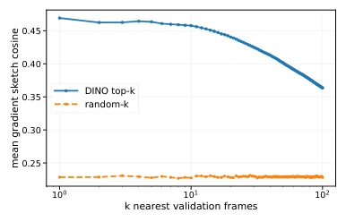
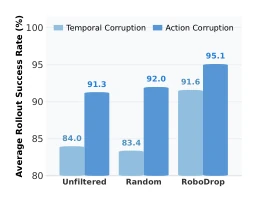
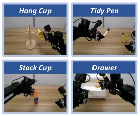
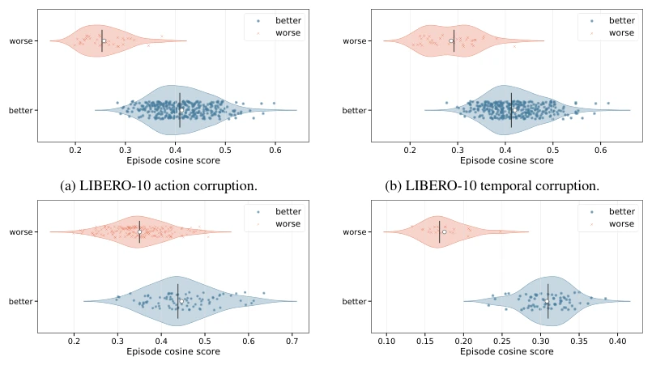
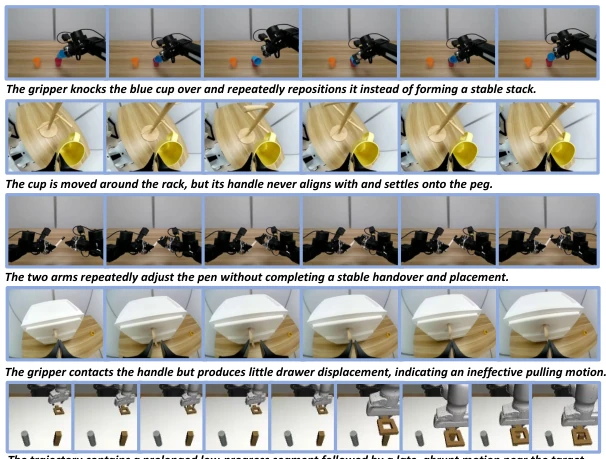

This paper proposes a "gradient audit" for VLA post-training data cleaning. The core of RoboDrop is verifying whether sample gradients match a clean validation set, rather than merely examining trajectory length or similarity. The results are indeed significant, with real robot task success rates increasing from 35% to 67.5%, outperforming DataMIL and QoQ. However, a limitation is that it relies on a small set of clean validation data, which is not inexpensive to collect, and expert annotation costs are not fully resolved. It essentially trades computation for quality, suitable for teams with compute resources but limited time. Additionally, it assumes the validation set is clean; if the validation set itself contains noise, the entire audit fails. However, as a data filtering tool, it is much more fine-grained than simply looking at success rate or length, at least capable of distinguishing erroneous supervision under local states. Verified on both simulation and real robots, it indicates that gradient direction reflects supervision quality better than feature similarity, representing a practical engineering solution, although the theoretical upper limit may be constrained by validation set quality.
研究动机Motivation
VLA 模型泛化虽强，但适配新任务需后训练，而真实数据常含执行错误、传感器漂移或时间错位 (Li et al., 2026; 2025)。现有方法如 Episode Length 只看时长，Behavior Retrieval 只看视觉相似，DataMIL 虽估效用但静态 (Dass et al., 2026; Du et al., 2023)。QoQ 用梯度但固定检查点 (Lee et al., 2026)。这些无法捕捉局部状态下的监督冲突，导致策略更新偏离期望。例如，同一任务不同阶段动作不同，全局梯度平均会混淆信号。需要细粒度、上下文感知的评估，且需适应训练动态。RoboDrop 正是为了解决这些痛点，通过在线梯度兼容性审计，识别不可靠监督，提升下游策略成功率。
Although VLA models exhibit strong generalization, adapting to new tasks requires post-training, while real-world data often contains execution errors, sensor drift, or temporal misalignment (Li et al., 2026; 2025). Existing methods such as Episode Length only consider duration, Behavior Retrieval only considers visual similarity, and DataMIL estimates utility but remains static (Dass et al., 2026; Du et al., 2023). QoQ uses gradients but fixed checkpoints (Lee et al., 2026). These cannot capture supervision conflicts under local states, causing policy updates to deviate from expectations. For instance, actions differ across different stages of the same task, and global gradient averaging confuses signals. Fine-grained, context-aware evaluation is required, and it must adapt to training dynamics. RoboDrop is designed to address these challenges, identifying unreliable supervision through online gradient compatibility auditing to improve downstream policy success rates.
The framework is divided into three steps: 1) Single-round warm-up online scoring, 2) Constructing context-aware local gradient references, 3) Aggregation and filtering. The innovation lies in "local gradient compatibility": using T5 instructions and DINO visual features to retrieve similar validation samples, calculating the cosine similarity between candidate sample gradients and local reference gradients, rather than global averages. This resolves the state mismatch problem in multi-stage tasks. Scores are dynamically updated along the training trajectory, finally filtered using BIC or fixed ratio. Key details include refreshing the validation gradient cache every M steps, and using CountSketch to compress gradients to reduce memory. Compared to fixed checkpoints, online scoring can capture dynamic changes during the optimization process. Additionally, BIC automatic filtering allows adaptive decision-making under unknown contamination rates, without requiring preset ratios.

Figure 7: Cross-episode gradient-direction sim- ilarity for DINO-nearest and randomly sampled frames on Robomimic-MH SQUARE.
Evaluated on LIBERO synthetic contamination, Robomimic-MH naturally suboptimal, and real robot data. Baselines include Length, BR, DataMIL, Scizor, QoQ. Metrics use AUROC and success rate. RoboDrop achieved 97.4% AUROC on LIBERO, and 67.5% real task success rate. Ablation studies show local reference is superior to global, and online scoring is superior to fixed checkpoints. This proves that gradient direction reflects supervision quality better than feature similarity. On real robots, automatic filtering achieves 67.5% success rate without preset contamination rates, outperforming the fixed 20% budget's 63.75%. Cross-backbone testing shows the method has strong generalization and does not depend on specific architectures.

Figure 2: LIBERO rollout suc- cess rate after data curation.

Figure 3: The four real-world ma- nipulation tasks.

Figure 5: RoboDrop episode cosine-score distributions across simulated and real-world data-quality settings. Worse denotes corrupted or non-proficient demonstrations, and Better denotes clean or proficient demonstrations.

Figure 6: Representative suboptimal trajectories identified by RoboDrop. Each row illustrates a distinct failure mode through selected frames from one trajectory.